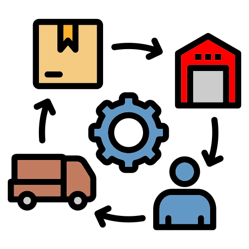

Commerce is a broad field that covers various aspects of business, trade, and finance. Here are some of the major fields in commerce:

üìä Accounting
Accounting is the systematic process of recording and analyzing financial transactions. This field ensures businesses maintain proper financial records.
- Financial Accounting
- Management Accounting
- Tax Accounting
- Auditing

üíº Business Administration
Business administration involves overseeing business operations and managing departments such as HR, marketing, and finance for optimal performance.
- Organizational Behavior
- Human Resources Management
- Operations Management
- Strategic Management

üí∞ Finance
Finance involves the management of money, investments, and financial systems for individuals and corporations. This field also deals with risk management.
- Corporate Finance
- Investment Banking
- Risk Management
- Financial Planning

üìà Marketing
Marketing is about promoting products or services and engaging with customers through various channels like digital platforms and advertising.
- Market Research
- Digital Marketing
- Brand Management
- Advertising and Promotions
üöÄ Entrepreneurship
Entrepreneurship is the process of starting and managing new businesses. Entrepreneurs create value by introducing innovative products or services.
- Business Development
- Innovation
- Startup Management
- Venture Capital
üåç International Business
International business involves conducting commercial activities across national borders, including global trade, supply chains, and market expansion.
- Global Strategy
- International Trade
- Global Marketing
- Cross-Cultural Management
üè¨ Retail Management
Retail management involves managing the day-to-day operations of retail businesses, ensuring customer satisfaction, sales, and inventory control.
- Store Management
- Customer Service
- Inventory Management
- Retail Strategy

üõí E-Commerce
E-commerce involves buying and selling goods online, leveraging digital platforms to manage orders, payments, and logistics.
- Online Retailing
- Digital Payments
- Logistics and Supply Chain
- Website Development

üì¶ Supply Chain Management
Supply chain management focuses on the flow of goods and services from suppliers to customers, managing logistics, inventory, and procurement.
- Logistics Management
- Inventory Control
- Procurement
- Supply Chain Optimization

üìä Business Analytics
Business analytics uses data and statistical analysis to help companies make informed business decisions, optimize processes, and predict trends.
- Data Analysis
- Predictive Analytics
- Big Data
- Decision-Making

üë• Human Resource Management
HRM involves managing employees, recruitment, training, and ensuring that employees' needs align with business objectives.
- Recruitment
- Employee Development
- Compensation and Benefits
- Labor Relations

üè° Real Estate
Real estate involves the buying, selling, and management of property. This field is essential for individuals and businesses to own or lease space.
- Property Management
- Real Estate Development
- Commercial and Residential Properties
- Real Estate Investment